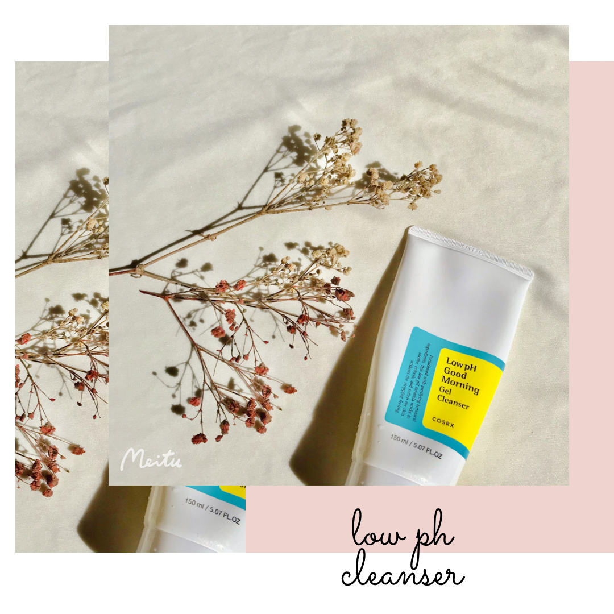
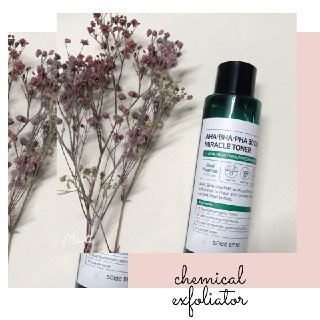
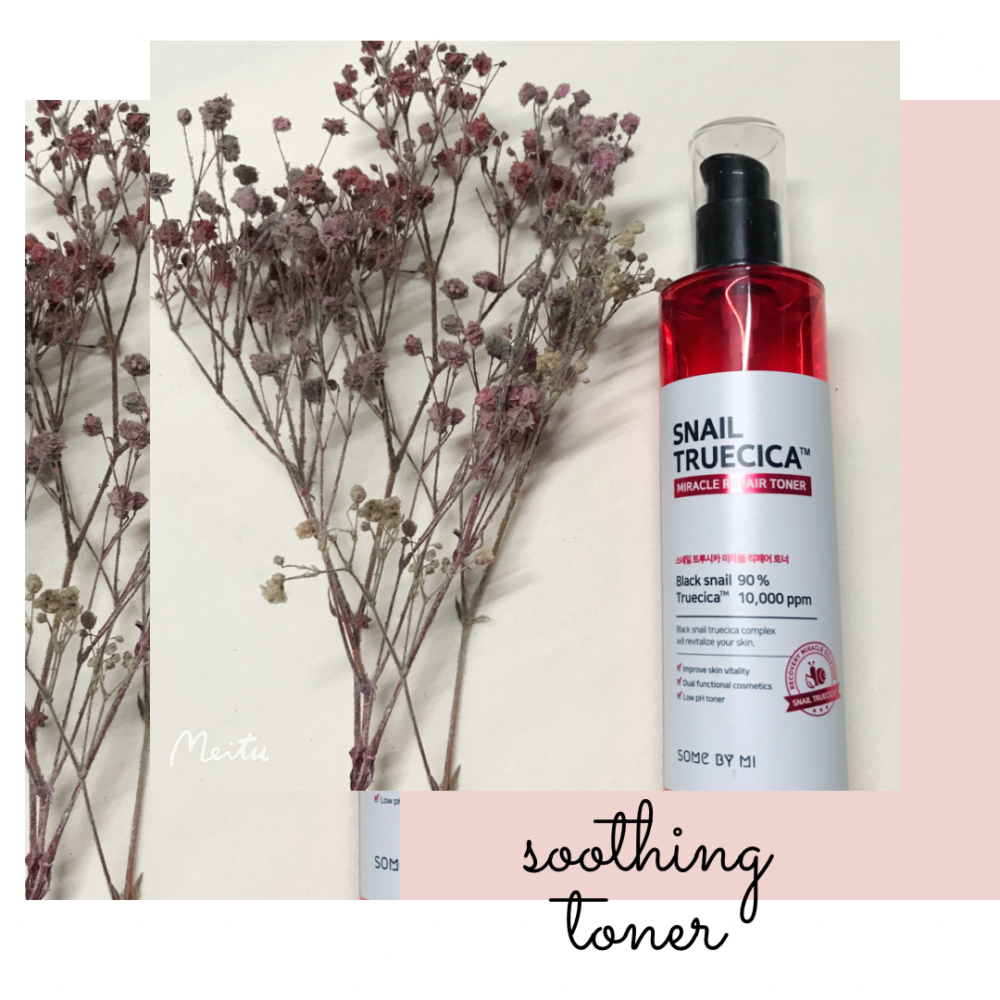
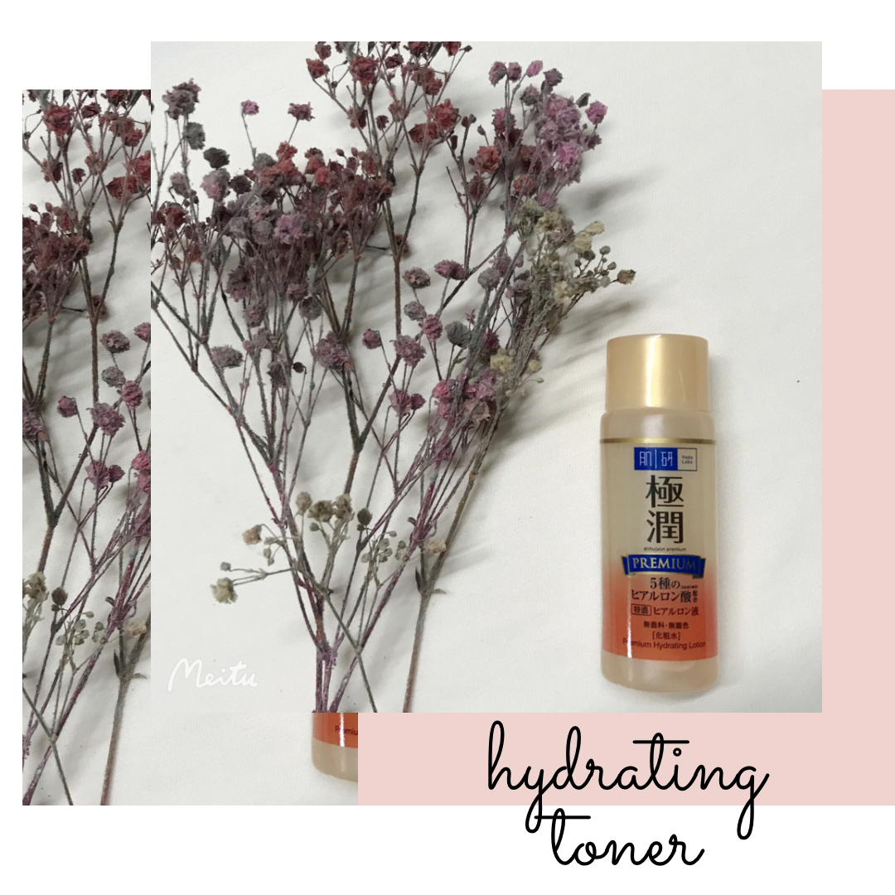
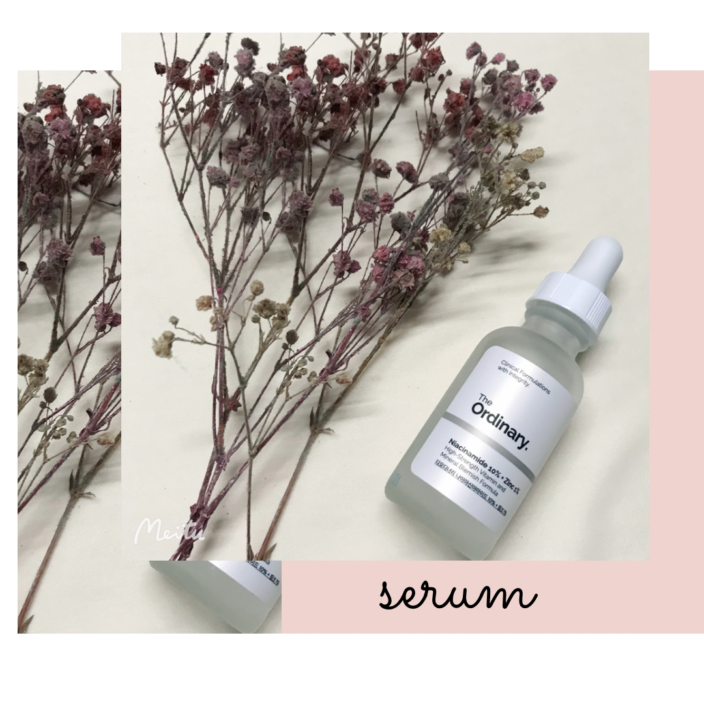
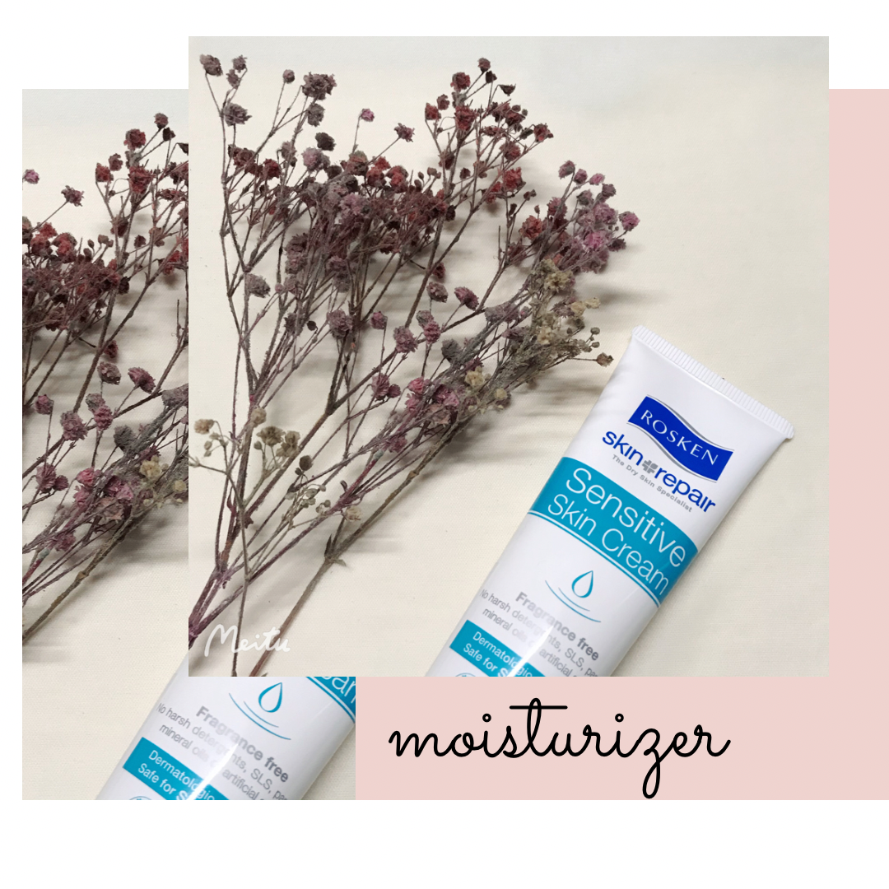
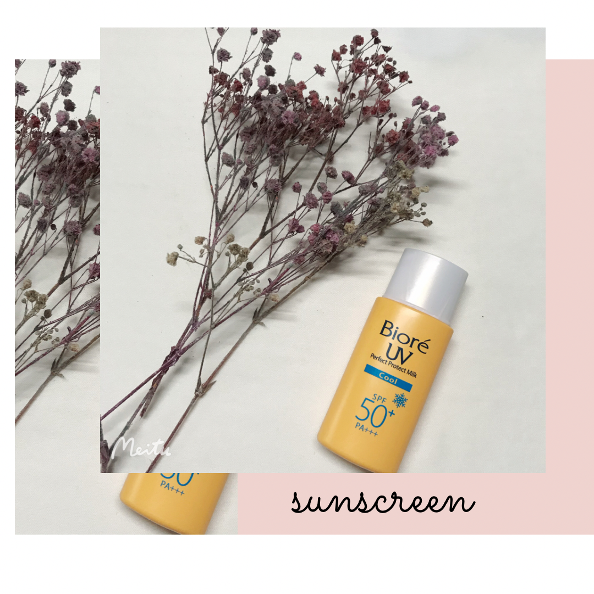
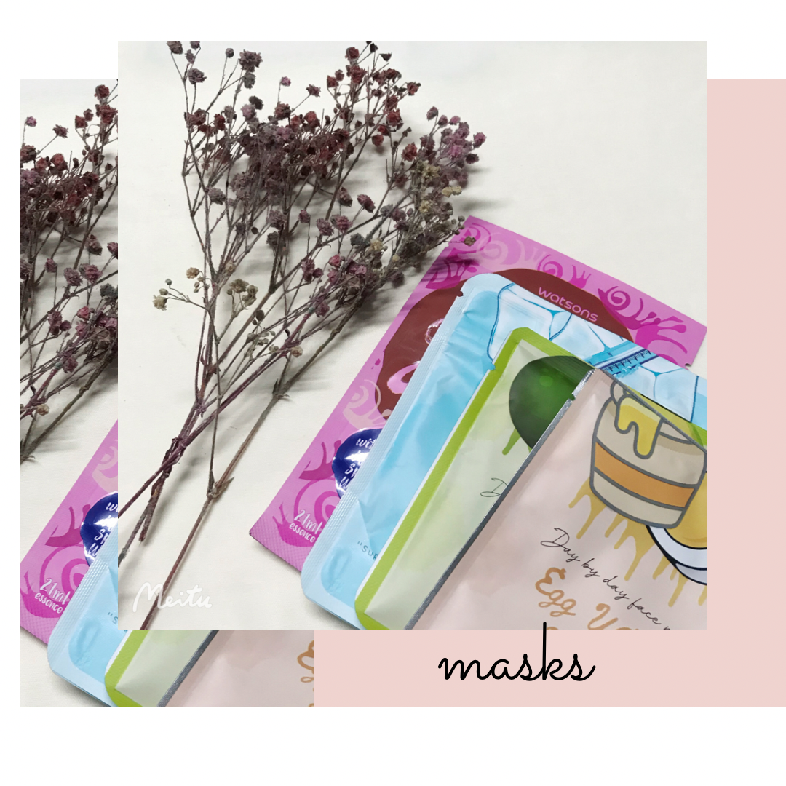

|  |
- Cosrx Good Morning Gel Cleanser
- Low ph cleanser
- Used twice in a day
- Good for sensitive skin
- RM26.90
|
|  |
- Somebymi 30 Days Miracle Toner
- Chemical Exfoliator
- Use 2-3 times in a week
- Helps reducing redness & fading scars
- RM38.00
|
|  |
- Somebymi Snail Truecica Toner
- Functioning as a soothing toner
- Gentle for all skin types
- One of my favourite soothing toner
- RM42.00
|
|  |
- HadaLabo Hydrating Lotion (premium)
- Functioning as a hydrating toner
- Makes my skin more glowy and radiant
- Good for dry skin such as my skin
- RM12.90
|
|  |
- The Ordinary Serum
- Serum that consist Niacinamide in it
- Helps reducing blemishes
- Good for dry skin such as my skin
- RM31.90
|
 |
- Moisturizer
- Good for dry skin
- Important product in skincare
- Moisturize my skin well
- RM22.00
|
|  |
- Sunscreen
- Used this every single day
- Need to re-apply every 3 hours
- Have white cast
- RM18.00
|
 |
- Clay Mask
- Used this 2-3 days a week
- Helps detoxing skin
- Powdery Texture
- RM4.50 each piece
|